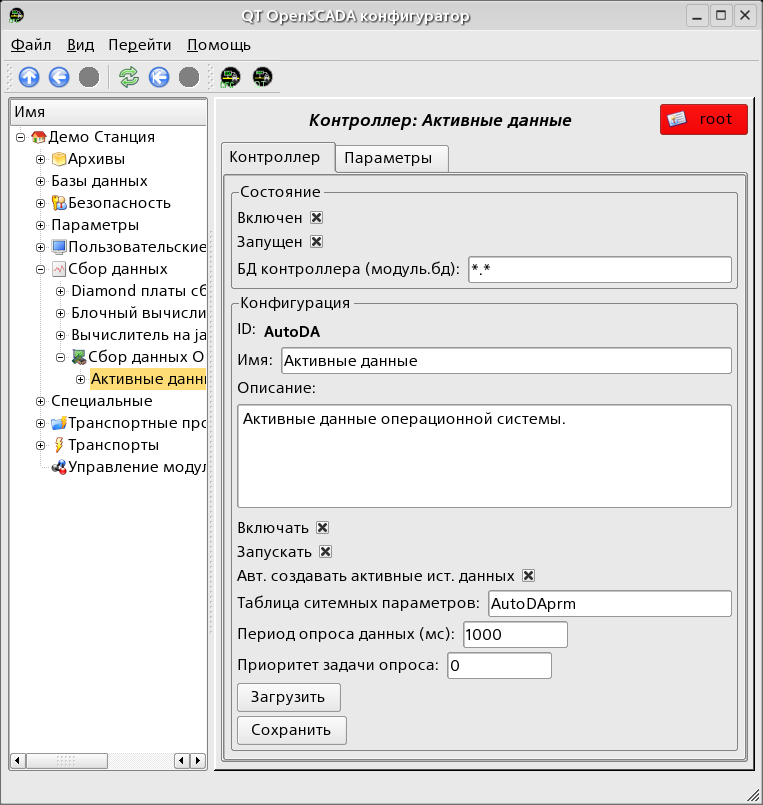
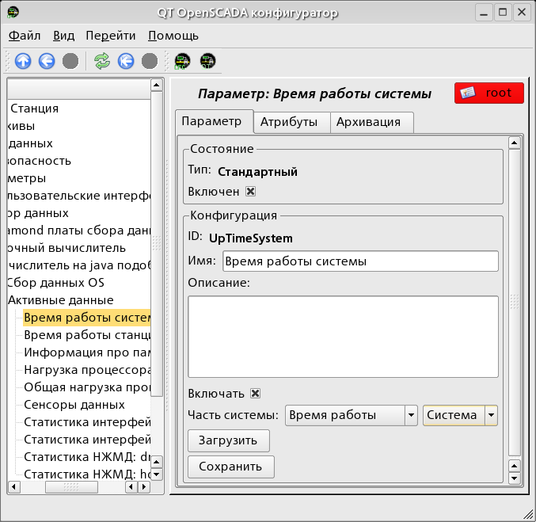

Предоставляет
сбор данных из ОС. Поддерживаются источники данных ОС Linux:
HDDTemp, LMSensors, Uptime, Memory, CPU и т.д.
Лицензия:
GPL
Введение
Модуль является, своего рода, шлюзом между системой OpenSCADA
и ОС(операционной системой). Модуль получает данные
из различных источников данных ОС и позволяет управлять
компонентами ОС.
Модуль предоставляет возможность автоматического поиска поддерживаемых
и активных источников данных с созданием параметров
для доступа к ним.
1 Контроллер данных
Для добавления источника данных ОС создаётся
и конфигурируется контроллер в системе OpenSCADA. Пример
вкладки конфигурации контроллера данного типа изображен на рис.1.

Рис.1. Вкладка конфигурации контроллера.
С помощью этой вкладки можно установить:
Состояние контроллера, а именно: «Включен», Запущен» и имя БД содержащей конфигурацию.
Идентификатор, имя и описание контроллера(платы).
Состояние в которое переводить контроллер при загрузке: «Включен» и «Запущен».
Признак «Автоматический поиск активных источников данных и создание параметров для них».
Имя таблицы для хранения конфигурации параметров контроллера.
Период и приоритет задачи опроса источников данных.
Сохранить/загрузить контроллер в БД.
2 Параметры
Модуль OperationSystem
предоставляет только один тип параметров “Все параметры”.
Дополнительными конфигурационными полями параметров данного модуля
(рис.2) являются:
источник данных;
дополнительный (зависит от источника данных).

Рис.2. Вкладка конфигурации параметра.
В таблице ниже приведен список поддерживаемых источников данных
ОС, значение дополнительного конфигурационного поля и атрибуты
параметров.
Ист. данных
Значение доп. конфигурац. поля
Атрибуты параметра
Требования
Процессор (CPU)
Имя/номер процессора. Может иметь значение номера процессора или быть «в общем» по всем процессорам <gen>.
[real] load:Нагрузка (%)
[real] sys:Система (%)
[real] user:Пользователь (%)
[real] idle:Простой (%)
Память (MEM)
Не используется
[dec] free:Свободно (кБ);
[dec] total:Всего (кБ);
[dec] use:Использовано (кБ);
[dec] buff:Буфера (кБ);
[dec] cache:Кеш (кБ);
[dec] sw_free:Своп, свободно (кБ);
[dec] sw_total:Своп, всего (кБ);
[dec] sw_use:Своп, использовано (кБ).
Сенсоры (sensors)
Не используется
Атрибуты определяются сенсорами доступными на материнской плате. Для каждого сенсора создаётся отдельный атрибут.
Должна быть установлена программа mbmon.
Температура HDD (hddtemp)
Диск. Доступные в системе диски.
[string] disk:Имя;
[string] ed:Единица измерения;
[real] t:Температура.
Должна быть установлена, сконфигурированна и запущена как сервис программа hddtemp
Время работы (uptime)
Время работы:
Система;
Станция.
[dec] full:Секунды полностью;
[dec] sec:Секунды;
[dec] min:Минуты;
[dec] hour:Часы;
[dec] day:Дни.
HDD Smart (hddsmart)
Диск. Доступные в системе диски.
Атрибуты определяются SMART-полями доступными для указанного диска. Для каждого поля создаётся отдельный атрибут.
Должна быть установлена и доступна утилита smartctl.
Статистика HDD (hddstat)
Диск или раздел. Доступные в системе диски и разделы.
Атрибуты:
[dec] rd:Прочитано (Кб);
[dec] wr:Записано (Кб).
Статистика сети (netstat)
Сетевой интерфейс. Сетевые интерфейсы доступные в системе.